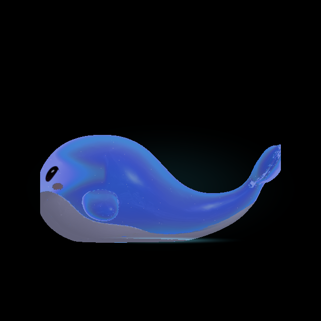
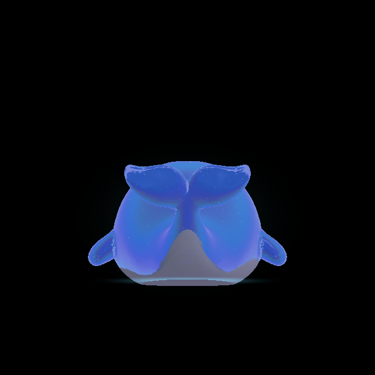
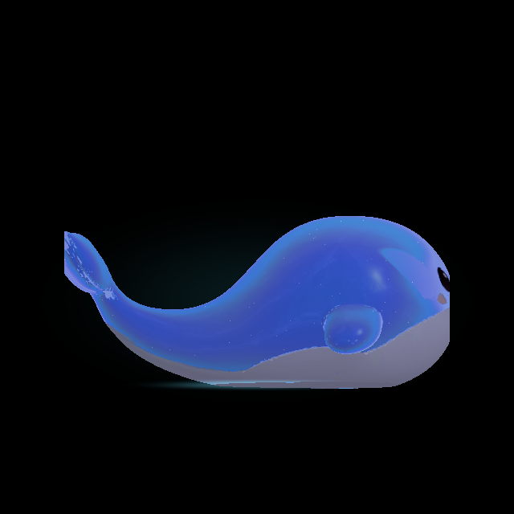

Native Unity 6000.6.5f1 diagnostic captures. Soft aura follows the body through rotation; the last pair isolates surface emission with the halo and ground spill hidden. These are diagnostic views, not phone UI screenshots.


